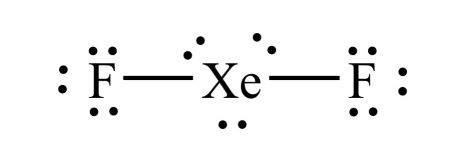

1) How many moles of Mg are contained in 697 mg of Mg?
A) 28.7 mol
B) 16.9 mol
C) 0.0287 mol*
D) 0.0000349 mol
To determine the number of moles, we need to divide the given mass of Mg by its molar mass.
The molar mass of Mg is approximately 24.31 g/mol.
First, let's convert the given mass from milligrams (mg) to grams (g): 697 mg x 1 g/1000 mg = 0.697 g
Next, we can calculate the number of moles: moles = 0.697 g x \( \frac{1 mol}{24.31 g} \) = (0.697)/(24.31) mol ≈ 0.0287 mol
2) Calculate the wavelength (in nm) of light that has a frequency of 5.69 x 1014 Hz.
A) 5.27x10-7 nm
B) 1.90x1013 nm
C) 0.00190 nm
D) 527 nm*
To calculate the wavelength (λ) of light, you can use the equation:
λ = c / ν
where λ is the wavelength, c is the speed of light in a vacuum (approximately 3.00 x 108 m/s), and ν is the frequency of the light.
First, let's convert the frequency given in Hz to 1/s since Hz and 1/s mean the same thing
Frequency (ν) = 5.69 x 1014 Hz = 5.69 x 1014 1/s
Now, we can calculate the wavelength using the equation:
λ = c / ν = (3.00 x 108 m/s) / (5.69 x 1014 1/s)
λ = 5.27x10-7 m
To convert this to nanometers (nm), we multiply by 10^9:
λ = 5.27x10-7 m x = \( \frac{10^9 nm}{1 m} \) 527 nm
3) Which of the following sets of quantum numbers is possible?
A) (5, 5, +5, -\( \frac{1}{2} \))
B) (2, 0, +0, +\( \frac{1}{2} \))*
C) (3, 1, +1, +1)
D) (4, 2, -4, +\( \frac{1}{2} \))
For a set of quantum numbers to be valid, the following relationships must be satisfied:
The principal quantum number (n) must be a positive integer (1, 2, 3, ...).
The azimuthal quantum number (ℓ) must be an integer ranging from 0 to (n-1).
The magnetic quantum number (mℓ) must be an integer ranging from -ℓ to +ℓ.
The spin quantum number (ms) must be either +1/2 or -1/2.
Let's evaluate the given sets of quantum numbers:
(2, 0, +0, +\( \frac{1}{2} \))
n = 2 (valid as it is a positive integer).
ℓ = 0 (valid as it is within the range of 0 to (n-1)).
mℓ = +0 (valid as it is within the range of -ℓ to +ℓ).
ms = +\( \frac{1}{2} \) (valid as it is either +1/2 or -1/2).
Therefore, this set of quantum numbers is valid.
(5, 5, +5, -\( \frac{1}{2} \))
n = 5 (valid as it is a positive integer).
ℓ = 5 (invalid as it is not within the range of 0 to (n-1)).
mℓ = +5 (valid as it is within the range of -ℓ to +ℓ).
ms = -\( \frac{1}{2} \) (valid as it is either +1/2 or -1/2).
Therefore, this set of quantum numbers is not valid due to the value for ℓ.
(4, 2, -4, +\( \frac{1}{2} \))
n = 4 (valid as it is a positive integer).
ℓ = 2 (valid as it is within the range of 0 to (n-1)).
mℓ = -4 (invalid as it must be within the range of -ℓ to +ℓ).
ms = +\( \frac{1}{2} \)(valid as it is either +1/2 or -1/2).
Therefore, this set of quantum numbers is not valid due to the value of mℓ being outside the allowed range.
(3, 1, +1, + 1)
n = 3 (valid as it is a positive integer).
ℓ = 1 (valid as it is within the range of 0 to (n-1)).
mℓ = +1 (valid as it is within the range of -ℓ to +ℓ).
ms = +1 (invalid as it must be either +1/2 or -1/2).
Therefore, this set of quantum numbers is not valid due to the incorrect value for ms.
Based on the numerical relationships between the quantum numbers, only the set (2, 0, +0, +\( \frac{1}{2} \)) satisfies the required conditions and is therefore valid.
4) Which of the following sets of quantum numbers is possible?
A) (4, 5, -3, +\( \frac{1}{2} \))
B) (4, 3, -3, -\( \frac{1}{2} \))*
C) (2, 0, +2, -\( \frac{1}{2} \))
D) (3, 2, -2, -1)
For a set of quantum numbers to be valid, the following relationships must be satisfied:
The principal quantum number (n) must be a positive integer (1, 2, 3, ...).
The azimuthal quantum number (ℓ) must be an integer ranging from 0 to (n-1).
The magnetic quantum number (mℓ) must be an integer ranging from -ℓ to +ℓ.
The spin quantum number (ms) must be either +1/2 or -1/2.
Let's evaluate the given sets of quantum numbers:
(4, 3, -3, -\( \frac{1}{2} \))
n = 4 (valid as it is a positive integer).
ℓ = 3 (valid as it is within the range of 0 to (n-1)).
mℓ = -3 (valid as it is within the range of -ℓ to +ℓ).
ms = -\( \frac{1}{2} \) (valid as it is either +1/2 or -1/2).
Therefore, this set of quantum numbers is valid.
(4, 5, -3, +\( \frac{1}{2} \))
n = 4 (valid as it is a positive integer).
ℓ = 5 (invalid as it is not within the range of 0 to (n-1)).
mℓ = -3 (valid as it is within the range of -ℓ to +ℓ).
ms = +\( \frac{1}{2} \) (valid as it is either +1/2 or -1/2).
Therefore, this set of quantum numbers is not valid due to the value for ℓ.
(2, 0, +2, -\( \frac{1}{2} \))
n = 2 (valid as it is a positive integer).
ℓ = 0 (valid as it is within the range of 0 to (n-1)).
mℓ = +2 (invalid as it must be within the range of -ℓ to +ℓ).
ms = -\( \frac{1}{2} \)(valid as it is either +1/2 or -1/2).
Therefore, this set of quantum numbers is not valid due to the value of mℓ being outside the allowed range.
(3, 2, -2, - 1)
n = 3 (valid as it is a positive integer).
ℓ = 2 (valid as it is within the range of 0 to (n-1)).
mℓ = -2 (valid as it is within the range of -ℓ to +ℓ).
ms = -1 (invalid as it must be either +1/2 or -1/2).
Therefore, this set of quantum numbers is not valid due to the incorrect value for ms.
Based on the numerical relationships between the quantum numbers, only the set (4, 3, -3, -\( \frac{1}{2} \)) satisfies the required conditions and is therefore valid.
5) Calculate the frequency of a photon (in Hz) with a wavelength of 257.3 nm.
A) 0.00117 Hz
B) 8.58x10-16 Hz
C) 7.73x10-19 Hz
D) 1.17x1015 Hz*
To calculate the frequency of a photon using its wavelength, you can use the following equation:
c = λ * ν
Where: c is the speed of light in a vacuum (3.00 x 108 m/s) λ is the wavelength of the photon in meters ν is the frequency of the photon in Hz
First, we need to convert the given wavelength of 257.3 nm to meters:
Now we can rearrange the equation to solve for the frequency:
ν = c / λ = (3.00 x 108 m/s) / (2.57x10-7 m)
ν ≈ 1.17x1015 Hz
6) Which of the following colors has the longest wavelength
A) violet
B) orange
C) red*
D) yellow
ROY G. BIV is a mnemonic for remembering the order of visible light from lowest energy, lowest frequency to highest energy and highest frequency or from longest wavelength to shortest wavelength.
Lowest energy, lowest frequency, highest wavelength Red Orange Yellow Green Blue Indigo Violet Highest energy, highest frequency, shortest wavelength
It can also help to remember that infrared (which is right by red) has low energy, low frequency, and a high wavelength, and that ultraviolet (which is right by violet) has high energy, high frequency, and a short wavelength.
7) Which class of the electromagnetic spectrum causes sunburns?
A) microwaves
B) ultraviolet radiation*
C) infrared radiation
D) radio waves
X-rays are used to visualize bones and internal organs UV or ultraviolet waves cause sunburns Microwaves are used to cook food in a common kitchen appliance (a microwave) by vibrating water molecules to produce heat Radio waves are used to transmit messages over long distances
8) Calculate the molar mass for C9H18O.
A) 142.2 g/mol*
B) 125.1 g/mol
C) 29.02 g/mol
D) 126.2 g/mol
To calculate the molar mass for C9H20O, take the number of each element from the periodic table and multiply it by the molar mass of the element, then sum all the molar masses from each element. C: 12.01 g/mol x 9 = 108.1 g/mol H: 1.008 g/mol x 20 = 18.14 g/mol O: 16.00 g/mol x 1 = 16.00 g/mol Total: 142.2 g/mol
9) Give the formula for Nickel (III) oxide
A) N2O3
B) Ni3O2
C) Ni2O3*
D) NiO
The Roman numeral (III) tells us that the charge on Nickel is +3. From the periodic table we can know that the charge on oxide is -2. The lowest common multiple of 3 and 2 is 6, so the number of Nickel ions will need to be 2, and the number of oxide ions will need to be 3. This will give us a formula of Ni2O3.
10) Calculate the molar mass for Sn(ClO4)4.
A) 516.5 g/mol*
B) 872.6 g/mol
C) 218.2 g/mol
D) 324.5 g/mol
To calculate the molar mass for Sn(ClO4)4, take the number of each element from the periodic table and multiply it by the molar mass of the element, then sum all the molar masses from each element. Sn: 118.71 g/mol x 1 = 118.71 g/mol Cl: 35.45 g/mol x 4 = 141.8 g/mol O: 16.00 g/mol x 20 = 300 g/mol Total: 516.5 g/mol
11) Which of the following is the correct formula for the compound sodium sulfide?
A) Na2S*
B) So2S
C) NaS2
D) NaS
Sodium is a fixed charge metal and sulfide is a nonmetal cation, so this will be an ionic compound, and the charges can be know from the periodic table. Sodium will carry a +1 charge because it is in the 1A group. Sulfide will carry a -2 charge because sulfur is in the 6A group. The lowest common multiple of 1 and 2 is 2. Therefore we will need 2 sodium ions and 1 sulfide ion. That gives us a formula of Na2S.
12) Give the name for N2O3.
A) Nitrogen trioxide
B) Dinitrogen trioxide*
C) Nitrogen oxide
D) Nitrogen (II) oxide
Both N and O are nonmetals, so we will need to put a Greek prefix before the name of each element, then give the second element an -ide ending. However, mono- is dropped from the beginning in cases where there is only 1 of the first element in the compound. Since there are 2 N and 3 O, the name is Dinitrogen trioxide.
13) What is the empirical formula for N2H6?
A) N3H
B) NH3*
C) N2H3
D) N2H6
An empirical formula represents the simplest ratio of elements present in a compound. It shows the relative number of atoms of each element in a compound without specifying the actual number of atoms. To get the empirical formula you need to divide the subscripts in the equation (N2H6) by their greatest common divisor. In this case 1 and 2 are divisible by 2, which gives NH3 as the empirical formula.
14) How many bonding electrons are in BH3?
A) 4
B) 8
C) 6*
D) 3
Step 1: Draw the Lewis Structure. Step 2: Count the number of electron domains: the number of lone pairs and number of atoms bonded to B. You should get 3 electron domains. 3 electron domains corresponds to a trigonal planar electron domain geometry.
15) What is the hybridization on the central atom for XeF2?
A) sp
B) sp3d*
C) sp3d2
D) sp2
Step 1: Draw the Lewis Structure. Step 2: Count the number of electron domains: the number of lone pairs and number of atoms bonded to Xe. You should get 5 electron domains. 5 electron domains corresponds to sp3d hybridization.
# Electron domains
Hybridization
2
sp
3
sp2
4
sp3
5
sp3d
6
sp3d2
16) How many grams of LiF can be formed from 2.43 moles of BF3? Assume an excess of Li2SO3.
2 BF3 + 3 Li2SO3 ➞ B2(SO3)3 + 6 LiF
A) 21.0 g
B) 2.79 g
C) 0.281 g
D) 189 g*
To determine the grams of LiF formed from 2.43 moles of BF3, we need to use the balanced equation and the molar masses of the compounds involved.
From the balanced equation: 2 BF3 + 3 Li2SO3 ➞ B2(SO3)3 + 6 LiF
Using the stoichiometric ratio between BF3 and LiF (from the balanced equation), we find: 2 moles of BF3 produce 6 moles of LiF.
Now, we can calculate the mass of LiF: Molar mass of LiF: Li: 6.941 g/mol F: 18.998 g/mol (one F atom) Total molar mass of LiF: 6.941 + 18.998 = 25.939 g/mol
Mass of LiF = Moles of LiF × Molar mass of LiF = 7.29 moles × 25.939 g/mol = 189 g
Step 1) First balance the hydrogen on each sides by finding the least common multiple of14 and 2. Step 2) Next balance the carbon on each side. Step 3) Finally balance the oxygen last (because it exists in its elemental form unbound to other atoms). If needed, first double all the other coefficients.
18) How many moles of FeBr3 can be formed from 2.63 moles of KBr? Assume an excess of Fe(OH)3.
3 KBr + Fe(OH)3 ➞ 3 KOH + FeBr3
A) 7.89 moles
B) 2.63 moles
C) 0.877 moles*
D) 259 moles
From the balanced chemical equation: 3 KBr + Fe(OH)3 ➞ 3 KOH + FeBr3
We can see that the stoichiometric ratio between KBr and FeBr3 is 3:1. This means that for every 3 moles of KBr, we can expect 1 mole of FeBr3 to be formed.
Given that we have 2.63 moles of KBr, we can calculate the moles of FeBr3 using the stoichiometric ratio:
Moles of FeBr3 = (2.63 moles of KBr) / (3 moles of KBr per 1 mole of FeBr3) Moles of FeBr3 = 2.63 moles / 3 Moles of FeBr3 = 0.877 moles
19) All of the following compounds are soluble except which one?
A) MgSO4
B) (NH3)2CO3
C) PbCl2*
D) BeI
To answer this question, reference your solubility rules. Chlorides are generally soluble, however Pb2+, Ag+, and Hg22+ chlorides are insoluble.
20) What is the oxidation state of N in NH4+?
A) +1
B) -4
C) -3*
D) +5
To determine the oxidation state of nitrogen in NH4+, we consider the overall charge of the ion and the known oxidation states of other elements involved.
In the ammonium ion (NH4+), the hydrogen atoms have a known oxidation state of +1 when attached to a nonmetal such as nitrogen. The overall charge of the ion is +1 as well. Since the sum of the oxidation states in an ion must equal the overall charge, we can calculate the oxidation state of nitrogen.
Let's assume the oxidation state of nitrogen as x. We have four hydrogen atoms, each with an oxidation state of +1. Therefore:
(x) + 4(+1) = +1
Simplifying the equation:
x +4 = +1
x = -3
21) A piece of aluminum (mass is 22.1 g) at 430 K is placed in a Styrofoam coffee cup containing 20.0 mL of water at 298 K. Assuming that no heat is lost to the cup or the surroundings, what will the final temperature of the water be? The specific heat capacity of aluminum is 0.900 J/g°C and water is 4.184 J/g°C. The density of water is 1.00 g/mL.
A) 1690 K
B) 323 K*
C) 367 K
D) 257 K
22) How much heat energy is required to raise the temperature of 6.73 g of water from 43.83°C to 77.28°C? The specific heat capacity of water = 4.184 J/g°C.
A) 2180 J
B) 942 J*
C) 225 J
D) 140. J
23) Which of the following is an endothermic process?
A) Water boiling*
B) You mix an acid and a base and the solution becomes hot
C) Water vapor condensing
D) Rain freezing and becoming snow
24) The compound NaCl what types of bonds?
A) nonpolar covalent
B) ionic*
C) polar covalent
D) None of the above.
25) The compound CCl4 what types of bonds?
A) ionic
B) nonpolar covalent
C) polar covalent*
D) None of the above.
26) Which of the following has the largest first ionization energy; F, Cl, Br, or I?
A) Br
B) I
C) F*
D) Cl
F has the highest first ionization energy. The major trend in first ionization energy is that first ionization energy increases as you go up and to the right on the periodic table.
27) Determine the density of an item that has a mass of 247.6 g and displaces 13.6 mL of fluid when submersed in a beaker.
A) 0.0549 g/mL
B) 234 g/mL
C) 3370 g/mL
D) 18.2 g/mL*
To determine the density of an item, we can use the formula: Density = mass / volume
Given: Mass = 247.6 g Volume = 13.6 mL *note that the volume of the item is equal to the volume of the fluid it displaces
Now, we can substitute the values into the density formula: Density = 247.6 g / 13.6 mL
Let's perform the calculation: Density ≈ 18.2 g/mL
28) What are the signs on q (heat) and w (work) for a system that has work done on it by the surroundings, as well as giving off heat to the surroundings?
A) w is positive, q is positive
B) w is positive, q is negative*
C) w is negative, q is positive
D) w is negative, q is negative
29) Identify the strongest bond.
A) All bonds are the same strength
B) Triple covalent bond*
C) Single covalent bond
D) Double covalent bond
Triple bonds are stronger than double bonds, which are stronger than single bonds.
30) Predict the charge that aluminum will take as an ion.
A) +3*
B) +2
C) +1
D) -1
The charges that elements can form as ions depend on their position in the periodic table and their tendency to gain or lose electrons to achieve a stable electron configuration.
Sodium (Na) tends to lose one electron to achieve a stable electron configuration, forming a +1 ion (Na+). Magnesium (Mg) tends to lose two electrons, forming a +2 ion (Mg2+). Aluminum (Al) also tends to lose three electrons, forming a +3 ion (Al3+). Nitrogen (N) tends to gain three electrons to achieve a stable electron configuration, forming a -3 ion (N3-). Oxygen (O) tends to gain two electrons, forming a -2 ion (O2-). Fluorine (F) tends to gain one electron, forming a -1 ion (F-).
So, the predicted charges for these elements as ions are: Sodium: +1 Magnesium: +2 Aluminum: +3 Nitrogen: -3 Oxygen: -2 Fluorine: -1
31) What is the number of sigma and pi bonds in a triple bond?
A) 2 sigma bond and 1 pi bonds
B) 2 sigma bond and 2 pi bonds
C) 1 sigma bond and 2 pi bonds*
D) 1 sigma bond and 1 pi bonds
32) Which of the following shows the best Lewis structure for XeF2?
A)
B)
C)
D) *
Xe has 8 valence electrons and F has 7 valence electrons. Xe (being below the 2nd period) can get more than an octet, but F needs an octet. The formal charges need to be as close to zero as possible. is the only structure with the correct number of electrons (8 + 7 + 7 = 22) where the formal charges on all elements is zero.